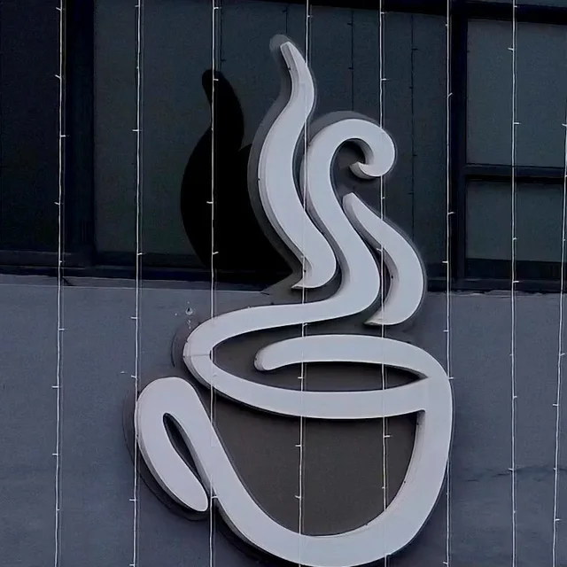

Amritsar
Three cafés · the roaster

- Ranjit AvenueSCO 49, B Block, District Shopping Centre, Amritsar 143001Dine in & takeaway · Mon to Sun · 9:00 to 21:00The roaster is on premise here.Get directions
- Kabir ParkKabir Park, AmritsarDine in & takeaway · Mon to Sun · 9:00 to 21:00Get directions
- Amritsar ColonyOpposite Guru Nanak Dev UniversityDine in & takeaway · Mon to Sun · 9:00 to 21:00Get directions